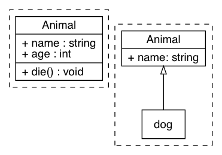

Java 编程语言精粹
Table of Contents
1 面向对象
1.1 对象初始化和消亡
一般类的初始化工具有以下几种方式：
import java.util.Random; class Employee { private static int nextId; private int id; private String name; private double salary; // 静态初始化块: 初始化静态变量 static { System.out.println("Static Initialezation Block"); Random gen = new Random(); nextId = gen.nextInt(1000); } // 对象初始化块: 当对象实例化时调用 { System.out.println("Object Initialezation Block"); id = nextId; nextId++; } // 默认构造器 public Employee() { System.out.println("Default Constructor"); } public static void main(String[] args) { Employee e1 = new Employee(); Employee e2 = new Employee(); } }
由下面运行结果可以得知，静态初始化块只在类第一次实例化才调用一次，对象初始化 块每次对象实例化都调用一次，并且是中构造器调用前调用
$ java Employee Static Initialezation Block Object Initialezation Block Default Constructor Object Initialezation Block Default Constructor
Java 有自己的垃圾回收机制 (GC)，一般 finalize() 只会在对象内存回收前被调用
一次，所以我们不需要显示让对象消亡，而是让 GC 来自动处理对象的析构，并且当需
要阻止对象消亡时，就需要显示将保护的对象通过 finalize() 挂载到 GCRoot 上
1.2 面向对象的特征
1.2.1 继承
- 概念：继承是从已有的类中派生出新的类，新的类能吸收已有类的数据属性和行为， 并能扩展新的能力
- 好处：提高代码的复用，缩短开发周期
class Employee { private String name; private double salary; public getName() { } public getSalary() { } } class Manager extends Employee { private double bonus; public getSalary() { } public setBonus(double bonus) { } }
- final 类不允许继承，final 方法不允许 Override
final class Executive extends Manager { // ... } class Employee { private String name; public final String getName() { return this.name; } }
1.2.2 多态
- 概念：多态（Polymorphism）按字面的意思就是“多种状态，即同一个实体同时具有 多种形式"。一般表现形式是程序在运行的过程中，同一种类型在不同的条件下表现 不同的结果。多态也称为动态绑定，一般是在运行时刻才能确定方法的具体执行对 象，这个过程也称为动态委派
- 好处：
- 将接口和实现分开，改善代码的组织结构和可读性，还能创建可拓展的程序
- 消除类型之间的耦合关系。允许将多个类型视为同一个类型
- 一个多态方法的调用允许有多种表现形式
Employee e = new Employee(); e.getName(); // => Employee.getName() e.getSalary(); // => Employee.getSalary() Manager m = new Manager(); m.getName(); // => Employee.getName() m.getSalary(); // => Manager.getSalary() m.setBonus(1000.0); // Manager.setBonus(...)
1.2.3 封装
- 概念：就是把对象的属性和行为（或服务）结合为一个独立的整体，并尽可能隐藏 对象的内部实现细节
- 好处：
- 隐藏信息，实现细节。让客户端程序员无法触及他们不应该触及的部分
- 允许可设计者可以改变类内部的工作方式而不用担心会影响到客户端程序员
1.3 Overload 和 Override
Overload 是 重载 的意思，Override 是 覆盖 的意思，也就是 重写

- Overload 表示同一个类中可以有多个名称相同的方法，但这些方法的参数列表各不相
同
- Overload 的参数列表不同包括：参数类型不同，参数个数不同
- Overload 不能重载函数返回值，即方法名称、参数个数和参数类型相同的方法被 视为同一个重载方法
- Overload 也不能覆盖访问权限、抛出的异常。方法的异常类型和数目不会对覆盖 造成影响
- Override 表示子类中的方法可以与父类中的某个方法的名称和参数完全相同，通过
子类创建的实例对象调用这个方法时，将调用子类中的定义方法，这相当于把父类中
定义的那个完全相同的方法给覆盖了
- Override 可以用于接口实现类中实现接口类中的方法
- Override 可以在子类中实现父类的方法，相当于子类中的方法覆盖了父类中的方法， 是一种实现多态的重要途径
- Override 覆盖父类方法时，子类只能抛出比父类更少的异常。或者是抛出父类抛出 的异常的子异常
- Override 不能覆盖父类中的 private 方法
class Employee { private String firstname; private String lastname; public void setName(String firstname) { this.firstname = firstname; this.lastname = null; } public void setName(String firstname, String lastname) { this.firstname = firstname; this.lastname = lastname; } } class Teacher extends Employee { private String fullname; @Override public void setName(String firstname, String lastname) { this.firstname = firstname; this.lastname = lastname; this.fullname = firstname + " " + lastname; } }
1.4 接口和抽象类
1.4.1 接口
- 接口用于描述系统对外提供的所有服务， 因此 接口中的成员常量和方法都必须是 公开 ( public) 类型的，确保外部使用者能访问它们
- 接口仅仅描述系统能做什么,但不指明如何去做,所以 接口中的方法都是抽象 (abstract) 方法
- 接口不涉及和任何具体实例相关的细节, 因此 接口没有构造方法 ，不能被实例化， 没有实例变量，只有静态（static）变量；
- 接口的中的变量是所有实现类共有的，既然共有，肯定是不变的东西，因为变化的东 西也不能够算共有。所以 变量是不可变 (final)类型，也就是常量了
接口中不可以定义变量即只能定义常量(加上 final 修饰就会变成常量)。所以接口的
属性默认是 public static final 常量，且必须赋初值。 注意：final 和
abstract 不能同时出现。接口中的方法默认是 public abstract
接口的定义使用 interface 关键字
public interface HelloInterface { }
实现接口使用 implements 关键字
public class HelloInterfaceImpl implements HelloInterface { }
1.4.2 抽象类
在面向对象的概念中，所有的对象都是通过类来描绘的，但是反过来，并不是所有的类 都是用来描绘对象的，如果一个类中没有包含足够的信息来描绘一个具体的对象，这样 的类就是抽象类。 抽象类和接口很像，他们之间的一些关键区别如下：
- 接口中所有的方法隐含的都是抽象的。而抽象类则可以同时包含抽象和非抽象的方法
- 类可以实现很多个接口，但是只能继承一个抽象类
- 类如果要实现一个接口，它必须要实现接口声明的所有方法。但是，类可以不实现抽 象类声明的所有方法，当然，在这种情况下，类也必须得声明成是抽象的。
- 抽象类可以在不提供接口方法实现的情况下实现接口
- Java 接口中声明的变量默认都是 final 的。抽象类可以包含非 final 的变量。
- Java 接口中的成员函数默认是 public 的。抽象类的成员函数可以是 private protected 或者是 public
- 接口是绝对抽象的，不可以被实例化。抽象类也不可以被实例化，但是，如果它包含 main 方法的话是可以被调用的
抽象类的定义如下：
public abstract class Employee { private String name; private int number; public abstract double computePay(); }
1.5 泛型
泛型在实际工作中使用的非常频繁，可以很大程度上减少对不同类型的重复操作的代码。
1.5.1 类和接口的泛型
类的泛型定义，之间在类名称后添加尖括号来表示
public class GenericClassOneType<T> { public void performAction(final T action) { // coding } }
1.5.2 方法的泛型
方法的泛型定义在 public, abstract, static 等关键字后面，例如：
public<T, R> R performAction(final T action) { final R result = null; // coding return result; } protected static<T, R> R performAction2(final T action) { final R result2 = null; // coding return result2; }
1.5.3 泛型中使用 extends 和 super 关键字
在泛型中可以使用对类型的基础关系
public <T extends InputStream> void read(final T stream) { } public <T extends Serializable> void store(final T object) { } public void interate(final Collection< ? super Integer> objects) { }
1.5.4 泛型的注意点
- Java 中泛型必须是对象，像
int,long,double等是不可以定义到泛型中， 需要使用对应的适配类 泛型只是在编译是才存在，编译完成后就没有泛型的留在字节码中。所以对应使用泛 型作为传参的其实是一个方法，例如：
void sort(Collection<String> strings) { } void sort(Collection<Number> strings) { }
在编译成字节码后其实是一个方法
void sort(Collection arg1) { }
2 参考代码片段
2.1 List 和数组互转
// List 转 Array List<Employee> list = new ArrayList<>(); while (...) { x = ...; list.add(x); } // Array 转 List Employee[] arr = new Employee[list.size()]; list.toArray(arr);
注意 Arrays.asList(...) 将数组转 List 时需要传对象。
Integer[] primes1 = {2,3,5}; List list1 = Arrays.asList(primes1); list1.size(); int[] primes2 = {2,3,5}; List list2 = Arrays.asList(primes2); list2.size();
在 Arrays.asList(...) 中，该方法接受一个变长参数，一般可看做数组参数，但是
因为 int[] 本身就是一个类型，所以 primes2 变量作为参数传递时，编译器认为只
传了一个变量，这个变量的类型是 int 数组
java> Integer[] primes1 = {2,3,5};
java.lang.Integer[] primes1 = [2, 3, 5]
java> List list1 = Arrays.asList(primes1);
java.util.List list1 = [2, 3, 5]
java> list1.size();
java.lang.Integer res7 = 3
java> int[] primes2 = {2,3,5};
int[] primes2 = [2, 3, 5]
java> List list2 = Arrays.asList(primes2);
java.util.List list2 = [[I@4ed8ff]
java> list2.size();
java.lang.Integer res10 = 1
java>
2.2 assert 断言
assertion (断言) 在软件开发中是一种常用的调试方式，很多开发语言中都支持这种机
制。一般来说，assertion 用于保证程序最基本、关键的正确性。assertion 检查通常
在开发和测试时开启。为了提高性能，在软件发布后， assertion 检查通常是关闭的。
在实现中，断言是一个包含布尔表达式的语句，在执行这个语句时假定该表达式为 true；
如果表达式计算为 false, 那么系统会报告一个 AssertionError。
断言用于调试目的：
assert(a > 0); // throws an AssertionError if a <= 0
断言可以有两种形式：
assert Expression1; assert Expression1 : Expression2;
Expression1 应该总是产生一个布尔值。 Expression2 可以是得出一个值的任意表达式； 这个值用于生成显示更多调试信息的字符串消息 断言在默认情况下是禁用的，要在编译 时启用断言，需使用 source 1.4 标记：
javac -source 1.4 Test.java
要在运行时启用断言需要开启允许断言的选项：
-ea或者-enableassertions: 启用断言-da或者-disableassertions: 禁用断言
2.3 格式输出字符串
String.format(String fmt, Object... args)的字符串格式和 C 语言的 printf 一样。MessageFormat.format(String fmt, Object... args)使用单引号标记任意字面 量，使用花括号加数字来表示相应的位置的占位符，例如：{0}表示第 1 个位置 的参数，{1}表示第 2 个位置的参数，以此类推。
java> String.format("Hi, %s", "Jack"); java.lang.String res0 = "Hi, Jack" java> import java.text.MessageFormat; Imported java.text.MessageFormat java> MessageFormat.format("Hi, {0}, I''m {1} years old.", "Tom", 18); java.lang.String res1 = "Hi, Tom, I'm 18 years old." java> MessageFormat.format("'Hi, {0}, I''m {1} years old.'", "Tom", 18); java.lang.String res2 = "Hi, {0}, I'm {1} years old." java>
格式化数字，注意在处理 long 类型的数字时，需要对数字进行格式化，参考下面的例子
java> MessageFormat.format("{0,number,#}", 1889989898989L); java.lang.String res14 = "1889989898989" java> MessageFormat.format("{0}", 1889989898989L); java.lang.String res15 = "1,889,989,898,989" java> MessageFormat.format("{0,number,#000000}", 1889989898989L); java.lang.String res16 = "1889989898989" java> MessageFormat.format("{0,number,#000000}", 12345L); java.lang.String res17 = "012345" java> MessageFormat.format("{0,number,#}", 12345L); java.lang.String res18 = "12345" java>
2.4 获取当前时间戳
自带的时间戳的获取方式有一下两种
java> new Date().getTime() java.lang.Long res0 = 1583839335691 java> System.currentTimeMillis() java.lang.Long res1 = 1583839349221 java>
2.5 正则表达式
正则表达式（regular expression）是处理字符串的一个非常有效的工具，Java 中关于
正则表达式处理的相关方法在 java.util.regex.* 包中
一种正则表达式的方式是，新建一个 Pattern，然后通过 Matcher 来匹配
import java.util.regex.*; class App232 { public static void main(String args[]) { String text = "823-232-232"; Pattern regex1 = Pattern.compile("^([0-9]*)\\s*", Pattern.CASE_INSENSITIVE); Matcher matcher1 = regex1.matcher(text); if (matcher1.find()) { String g1 = matcher1.group(1); // => "832" } } }
如果仅仅判断字符串是否符合正则表达式，可以使用 Pattern 类中的 matches 静态
方法
import java.util.*; import java.util.regex.*; class App482 { public static void main(String args[]) { String text = "Hello world"; if (! Pattern.matches("\\s*", text)) { // find non-blank text } } }
使用正则表达式替换字符串，例如 replaceAll 可以使用下面的方法来替换
import java.util.*; import java.util.regex.*; class App575 { public static void main(String args[]) { Pattern regex2 = Pattern.compile("[0-9]+", Pattern.CASE_INSENSITIVE); String text = "823-232-232"; String res1 = regex2.matcher(text).replaceAll("#"); // => "#-#-#" String res2 = text.replaceAll("[0-9]+", "#"); // same as res1 } }